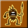
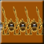
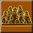

(宇宙ステージでも可能)

目次 > ゲームについて > シミュレーション攻略 > SPORE > アチーブメント一覧
| 概要 | 情報 | ステージ攻略 |
| コレクション一覧 | 継承アビリティー一覧 | アチーブメント一覧 |
| SPORE 攻略へ | 目次へ戻る |
| [ 細胞ステージ ] [ クリーチャーステージ ] [ 集落ステージ ] [ 文明ステージ ] [ 宇宙ステージ ] [ その他 ] |
| 細胞ステージ |
| 名前 | 画像 | 条件 |
| スピード狂 | 8分以内に細胞ステージをクリア | |
| 平和主義 | 他のクリーチャーを殺さずに細胞ステージをクリア | |
| 上陸 | 細胞ステージをクリア | |
| 完全主義者 | 細胞ステージの全てのパーツをアンロック | |
| アルミニウムの細胞 | 「難しい」で細胞捨て時をクリア | |
| 細胞中毒 | 細胞ステージを25回クリア | |
| 名前 | 画像 | 条件 |
| クリーチャーステージ |
| 名前 | 画像 | 条件 |
| クリーチャーステージをアンロック | 細胞ステージをクリア | |
| マルハナバチの戦い | 地面に足を付くことなく200メートル飛ぶ (滑空5、ジャンプ5にして高台から飛べば達成できます) |
|
| サバイバー | 一度も死ぬことなくクリーチャーステージをクリア | |
| スピード狂 | 1時間以内にクリーチャーステージをクリア | |
| 最大パワー | クリーチャーステージで能力のうち4 つが最大(5)のクリーチャーを作る | |
| みんなの親友 | 20種類以上のクリーチャーを味方にしてクリーチャーステージをクリア | |
| 村人たち | 他の種族のクリーチャーを3種類群れに入れる | |
| 進化達成 | クリーチャーステージをクリア | |
| 鉄のクリーチャー | 「難しい」でクリーチャーステージをクリア | |
| 勇壮なクリーチャー | クリーチャーステージで「壮大な○○」という名前のクリーチャーを倒す | |
| 野蛮 | クリーチャーステージを10回プレー(クリア?) | |
| 敵 | クリーチャーステージで20種類以上の種族を絶滅させる | |
| カスター将軍 | 仲間が合計で30匹死亡 | |
| 名前 | 画像 | 条件 |
| 集落ステージ |
| 名前 | 画像 | 条件 |
| 集落ステージをアンロック |  | クリーチャーステージをクリア |
| 人間工学的に恐ろしい! |  | 1時間以内に集落ステージをクリア |
| 集落の社交界の花形 | 全ての集落と同盟を組む | |
| 創始者 |  | 集落ステージをクリア |
| 農業者の幸せ | 野生のクリーチャーを3種類飼い慣らす | |
| 鉄の集落 | 「難しい」で集落ステージをクリア | |
| 悪意 | 5つの集落の住人を全て殺し、なおかつ全ての集落を破壊する | |
| 集落 | 集落ステージを10回クリア | |
| 監視の厳しい親 | 自分の集落の住人を一度も殺さずに集落ステージをクリア | |
| 名前 | 画像 | 条件 |
| 文明ステージ |
| 名前 | 画像 | 条件 |
| 文明ステージをアンロック | 集落ステージをクリア | |
| ゲットー爆破装置 | 国歌を10個作る (宇宙ステージでも可能) |
|
| スパイス占有者 | 星にある全てのスパイス間欠泉を所有する | |
| スターマン | 文明ステージで全ての都市を征服し、宇宙船で宇宙に行く | |
| アダマンティウム文明 | 「難しい」で文明ステージをクリア | |
| 軍事的に強い男 | 8個以上の軍事都市を持って文明ステージをクリア | |
| 宣教師 | |
8個以上の宗教都市を持った状態で文明ステージのすべての都市を占領する |
| 経済学者 | 8個以上の経済都市を持って文明ステージをクリア | |
| 雷鳴 | 1時間以内に文明ステージをクリア | |
| 無慈悲 | 文明ステージを10回クリア | |
| 飛行恐怖症 | 飛行機を購入せずに文明ステージですべての都市を占領する | |
| 結論 | ICBM を使用して文明ステージの全ての都市を征服する | |
| 名前 | 画像 | 条件 |
| 宇宙ステージ |
| 名前 | 画像 | 条件 |
| 宇宙ステージをアンロック | 文明ステージをクリア | |
| 帝国を築く者 | 10個の星で、それぞれコロニーを3つ設置する | |
| 開拓者の使命 | 地球を発見 | |
| 42 | 銀河の中心(銀河核)へ行く | |
| 征服者 | 15の星系を占領 | |
| 大規模偵察 | 宇宙ステージで100個のバッジ(100バッジポイント?)を入手 | |
| 砲兵隊員 | 500機以上の宇宙船を破壊 | |
| うっかり者の親 | 5個の星を他の帝国に占領される | |
| 探索の達人 | 宇宙ステージで150個のミッションをクリア | |
| シャーマンの情熱 | シャーマンとして宇宙ステージをプレー | |
| 戦士の情熱 | 戦士として宇宙ステージをプレー | |
| 貿易商の情熱 | 貿易商として宇宙ステージをプレー | |
| 科学者の情熱 | 科学者として宇宙ステージをプレー | |
| 外交官の情熱 | 外交官として宇宙ステージをプレー | |
| 騎士の情熱 | 騎士として宇宙ステージをプレー | |
| 狂信者の情熱 | 狂信者として宇宙ステージをプレー | |
| エコロジストの情熱 | エコロジストとして宇宙ステージをプレー | |
| 放浪者の情熱 | 放浪者として宇宙ステージをプレー | |
| シャーマンの英雄 | シャーマンとしてレベル10の達人バッジ(全知全能)を入手 | |
| 経済学者の英雄 | 科学者としてレベル10の達人バッジ(全知全能)を入手 | |
| 戦士の英雄 | 戦士としてレベル10の達人バッジ(全知全能)を入手 | |
| 貿易商の英雄 | 貿易商としてレベル10の達人バッジ(全知全能)を入手 | |
| エコロジストの英雄 | エコロジストとしてレベル10の達人バッジ(全知全能)を入手 | |
| 吟遊詩人の情熱 | 吟遊詩人として宇宙ステージをプレー | |
| 騎士の英雄 | 騎士としてレベル10の達人バッジ(全知全能)を入手 | |
| 吟遊詩人の英雄 | 吟遊詩人としてレベル10の達人バッジ(全知全能)を入手 | |
| 外交的英雄 | 外交官としてレベル10の達人バッジ(全知全能)を入手 | |
| 狂信者の英雄 | 狂信者としてレベル10の達人バッジ(全知全能)を入手 | |
| 放浪者の英雄 | 放浪者としてレベル10の達人バッジ(全知全能)を入手 | |
| スーパーパイロット | 宇宙ステージを40時間以上プレー | |
| 民間の技術者 | 他の惑星の集落を20以上、文明ステージに進化させる | |
| 自我の崩壊 | 自分で作成した2カ所の宇宙星系間の同盟を締結 | |
| 多重人格 | 宇宙ステージで特性を変更する | |
| 死の星 | 20個の星を破壊 | |
| ごますり屋 | 宇宙ステージでわいろを50回贈る | |
| 泥棒 | 宇宙ステージで50回スパイスを強奪 | |
| 別人格 | 全10種類のプレイヤータイプ(特性)で宇宙ステージをプレー | |
| 別人格の別人格 | 全10種類のプレイヤータイプ(特性)でレベル10の達人バッジ(全知全能)を入手 | |
| 動物飼育係 | 動物園の星を15個作る | |
| 名前 | 画像 | 条件 |
| その他 |
| 名前 | 画像 | 条件 |
| 生物学者 | 100種類のクリーチャーを作成してSporepedia に公開 | |
| 生物エンジニア | 生物ツールで25匹のクリーチャーを編集 | |
| 建築家 | 50個の建築物を作成し、Sporepedia に公開 | |
| 自動車エンジニア | 50個のビーグルを作成し、Sporepedia に公開 | |
| 手のひらの銀河 | 全てのステージをプレーし、全てのクリエイターを使う | |
| 創造主 | クリエイターを50時間使う | |
| Sporeファン | Spore を50時間プレー | |
| Spore 中毒 | Spore を100時間プレー | |
| 銀河の神 | 1度もゲームを終了せずに宇宙ステージまで進む | |
| デジャヴ | 自分で作成したものを別のゲームプレーで発見 | |
| 重大ニュース | 自分のクリエーション、またはSporecast がwww.spore.com で紹介される | |
| 新星 | 10人以上が行動しているSporecast を5個作成 | |
| ソーシャルエンジニア | 50個以上のアセットのあるSporecast を5個作成 | |
| 写真家 | テストモードからフォトやムービーを友達に送信 | |
| 社交界の花形 | 他のプレイヤーが作ったクリーチャー200種に会う | |
| むさぼり食う人 | 一つのゲームでトータル50種類以上のクリーチャーを捕食 | |
| 名前 | 画像 | 条件 |
| [ 細胞ステージ ] [ クリーチャーステージ ] [ 集落ステージ ] [ 文明ステージ ] [ 宇宙ステージ ] [ その他 ] |
| 概要 | 情報 | ステージ攻略 |
| コレクション一覧 | 継承アビリティー一覧 | アチーブメント一覧 |
| ページの上部へ | SPORE 攻略へ | 目次へ戻る |